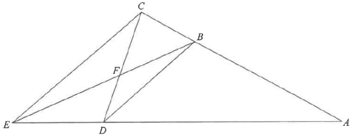

Click / hover the steps on the right to highlight the parts.
AC & AE (sides)BE (with AB = BE)BD // CECDPoints
2020 #8Angles in Triangles
In Figure 1, $B$ and $D$ are points lying on $AC$ and $AE$ respectively.
$BE$ and $CD$ intersect at the point $F$.
It is given that $AB = BE$, $BD // CE$, $\angle CAE = 30^\circ$ and $\angle ADB = 42^\circ$.
(a) Find $\angle BEC$. [5 marks]
(b) Let $\angle BDC = \theta$. Express $\angle CFE$ in terms of $\theta$.

Figure (original exam diagram)
STEP 1 · (a) Use BD // CE
Since $BD // CE$ and $AD$, $AE$ are transversals, the corresponding angles
Corresponding Angles of Parallel Lines\(BD // CE\ \Longrightarrow\ \angle AEC=\angle ADB\)The transversal \(AE\) cuts the parallel lines \(BD\) and \(CE\), giving \(\angle AEC=42^{\circ}\).
are equal:
$$\angle AEC = \angle ADB = 42^\circ$$
Corresponding angles: $BD$ and $CE$ are cut by the line $AE$.
STEP 2 · (a) Use AB = BE
In $\triangle ABE$, $AB=BE$, so $\triangle ABE$ is isosceles
Base Angles of an Isosceles Triangle\(AB=BE\ \Longrightarrow\ \angle BAE=\angle AEB\)\(\triangle ABE\) is isosceles, so \(\angle AEB=\angle BAE=30^{\circ}\).
. Hence the base angles are equal:
$$\angle AEB = \angle BAE = \angle CAE = 30^\circ$$
Base angles of an isosceles triangle are equal.
STEP 3 · (a) Subtract at E
At point $E$, ray $EB$ lies inside $\angle AEC$, so
$$\angle BEC = \angle AEC - \angle AEB = 42^\circ - 30^\circ = 12^\circ$$
Answer (a): $\angle BEC = 12^\circ$
STEP 4 · (b) Angle at C
Again $BD // CE$, and $AC$ is a transversal. Corresponding angles give
$$\angle DCE = \angle BDC = \theta$$
Take $D$ on $AE$ and $C$ on $AC$: the line $DC$ cuts the parallel lines.
STEP 5 · (b) Angles of △CFE
Angle Sum of a Triangle\(\angle A+\angle B+\angle C=180^{\circ}\)In \(\triangle CFE\) this gives \(\angle CFE=180^{\circ}-12^{\circ}-\theta\).
In $\triangle CFE$, the angle sum is $180^\circ$:
$$\angle CFE = 180^\circ - \angle BEC - \angle DCE$$
Question. In the figure, \(BD // CE\), \(AB=BE\), \(\angle ADB=48^{\circ}\) and \(\angle CAE=35^{\circ}\). (a) Find \(\angle BEC\). (b) If \(\angle DCE=\theta\), find \(\angle CFE\) in terms of \(\theta\).
Show the worked solution
Step 1. (a) \(BD // CE\), so corresponding angles give \(\angle AEC=\angle ADB=48^{\circ}\).
Step 2. (a) \(AB=BE\), so base angles are equal: \(\angle AEB=\angle BAE=\angle CAE=35^{\circ}\).